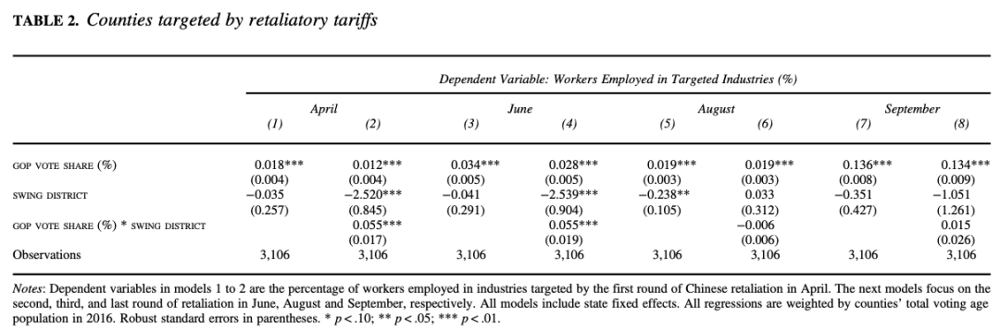
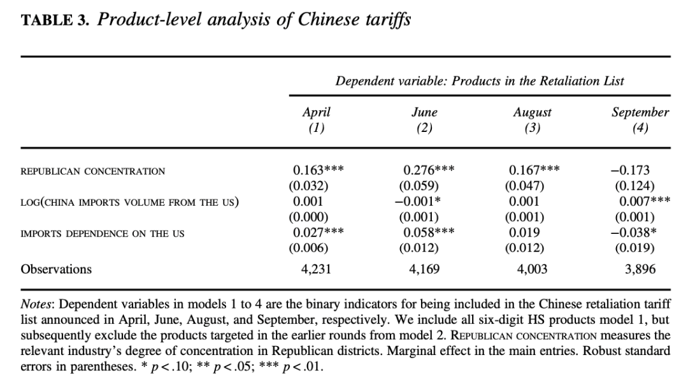
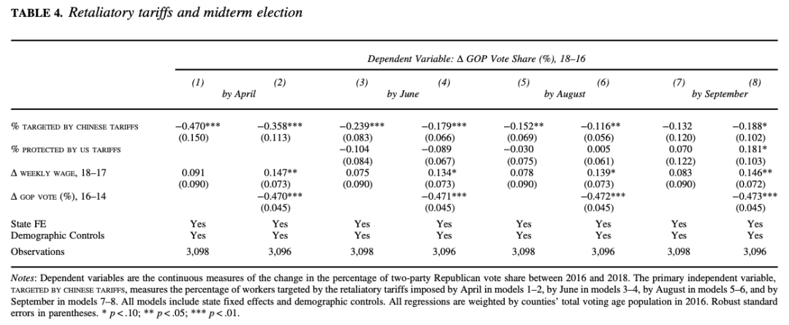
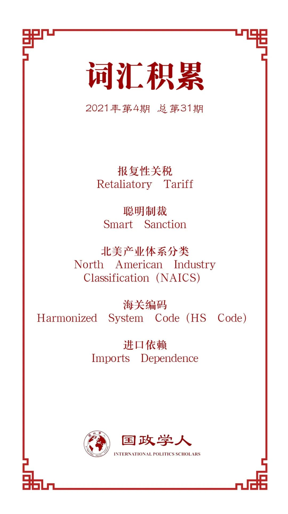

收录于合集

作品简介
【作者】 Sung Eun Kim，韩国高丽大学教授 ；Yotam Margalit，以色列特拉维夫大学教授
【编译】 钱靓（国政学人编译员，上海外国语大学）
【校对】 石雨宸
【审核】 卫紫璇
【排版】 张湘苹
【美编 】臧泽华
【来源】 Kim, S., & Margalit, Y. (2021). Tariffs As Electoral Weapons: The Political Geography of the US–China Trade War. International Organization , 75(1), 1-38. doi:10.1017/S0020818320000612
【归档】 《国际关系前沿》2021年第4期，总第31期。
期刊简介
《国际组织》（International Organization），简称“IO”，是一份经过同行评议的季刊，涵盖包括外交政策、国际关系、国际与比较政治经济学、安全政策、环境争端与解决、欧洲一体化、联盟模式与战争、谈判与冲突解决、经济发展与调整、国际资本流动等在内的多个国际事务领域。该刊成立于1947年，由剑桥大学出版社代表国际组织基金会出版，主编为乔治城大学的Erik Voeten。根据Journal Citation Reports显示，2019年其影响因子为5，在95种国际关系期刊中排名第2。
关税作为选举武器 ****
——中美贸易战中的地缘政治
Tariffs As Electoral Weapons:
The Political Geography of the
US–China Trade War
Sung Eun Kim
Yotam Margalit
内容提要
作为一种经济手段，关税政策早已成为影响国家间政治的重要手段，关税政策也影响到本国国情。随着特朗普政府上台，中美贸易矛盾日益激化，美中两国相继提高关税。与以往不同是，通过贸易战，中国向美国施加了来自外部政治压力，贸易战带来的负面经济影响已经深刻地影响了美国国内选举结果。作者认为，中国的报复性关税政策存在政治考虑。其中，受贸易战负面影响更直接的选民更加关注贸易战及其负面影响，并将中美冲突的升级归因于共和党。中国有选择的报复性关税是一种“聪明制裁”（smart sanction）的方式。中国避开对美国依赖较高的进口产品，而对特定地区（特朗普选民比例高的地区或摇摆选区中支持共和党的县）的产品提高关税，尽可能向特朗普政府及共和党施加政治压力。
文章导读
01
受中国的加征关税影响的美国产业和工人的风险情况
文章首先回顾了2018年4-9月期间中国向美国加征的四轮关税，将征收关税的6位数商品名称及编码（HS code）与其相对应的北美产业体系（NAICS）部门匹配，以确定某一产业是否受到报复性关税的影响，并挑选出每一轮中受影响最大的五个产业。研究表明，第一轮和第二轮的目标行业分别是农业和制造业，在分别统计这些目标产业中雇佣工人的占比后，计算受影响的工人比例。得出的结论是，在每一轮中国征收关税时，以县为单位的雇佣工人受影响的比例逐渐上升，地域范围也在扩大。
02
中国关税政策中的政治考虑
结合2014-2016年国会选举支持共和党选民的地域差异分析，研究预期是共和党县更有可能被征加关税。通过线性回归等式验证得到以下表1。
表1

表1体现的是，在特定i县的目标工业雇佣人数所占份额与“共和党在2014和2016年两党中（共和党与民主党）投票占比”（GOP vote share）、“在i县中是否至少存在20%摇摆区（摇摆区（swing district），指该地区在2014年和2016年的众议院选举中，共和党两党的投票份额在40％至60％之间）”这两个变量，以及这两个变量之间相互作用的关系（GOP vote share * swing district）。研究得出，在四轮的征加关税中，“共和党在2014和2016年两党中（共和党与民主党）投票占比”这一因素与结果的关联性较强，而两个变量的相互作用值则在第三和第四轮中降低。此结果表明，支持共和党的县受到关税政策的影响更明显，且更集中在摇摆区，但是在最后两轮加征关税时，政治考虑减少了。
为证明后两轮的关税政策并非偶然，文章增加了关税的特定商品作为分析单位，并使用新的研究方法，增加了2016年中国对该产品的进口总量和该产品对美国的贸易依赖度，目的在于分析在支持共和党的区域的相关产业就业的集中程度。
表2

表2表明，某相关产业在共和党支持率较高区域的集中程度与其在前几轮中被加征关税的可能性有系统性关联。在后两轮关税加征中，随着关税大幅上涨，即使商品选择与共和党相关性不再如前两轮明显，随机模拟关税表仍表明，其中99%的关税表与共和党选民支持率的关联度更小。同时，除了关税战中被选择的商品之外，还有其他对美国进口依赖度更小的商品。由此得出，中国选择加征关税清单时，最主要的因素并非尽可能减轻对中国进口市场的压力，而是如何最大化增加共和党的选举压力。
03
对美国国会选举的影响及其特殊性
（一）对共和党选民的影响
为了体现中国的关税政策对共和党选民的影响，文章研究了“报复性关税所针对的员工百分比体现在县级的风险程度”（Targeted by Chinese Tariff）、“被美国关税保护的产业中的员工百分比”（Pprotected by US Tariff）、“2017年至2018年之间每周工资的平均年度百分比变化”（Weekly Wage）和“前一个选举周期的投票趋势”（Republican Vote）这四个变量，及其与2016-2018年国会选举中某县共和党的两党投票中所占比例的变化之间的关系。
表3

表3表明，美国的关税加征对共和党有利，而中国的关税政策则对共和党的支持率有负面影响。与前几次国会选举相比，随着中国关税加征对工人周薪的影响加大，共和党在两党中的投票占比也相应地降低了0.12%-0.47%。这种趋势体现的是选民对未来贸易战的态度，也是对共和党候选人支持总统的贸易政策的一种谴责。但在后几轮贸易战中，这种负面影响在逐渐降低，原因可能包括：选民不了解具体的关税加征政策不了解；中美关税战中的关税清单大部分重叠而减轻了中国关税政策在当地的影响；第四轮关税在选举前不久才加征。为了验证结果的准确性，文章模拟了在中国和美国均不向对方征收任何报复性关税的情况下的选举结果将有何不同。根据预测，共和党将可能再增加三到八个席位。
最后，文章研究了中国关税对农业和非农业部门可能产生的不同影响。中国是美国重要的农产品出口国。鉴于中国关税目标的农业部门主要关注出口市场，共和党投票率的降低很大程度上源于出口商的动员。
（二）中国关税政策的特殊考虑
自特朗普上台以来，除了中国，欧盟、墨西哥和加拿大也对曾美国加征关税。文章继续探究中国与以上国家关税政策的相似性及对选举结果的影响。结果显示，这些国家在加征关税时并没有特别针对摇摆区，这更能凸显中国关税政策的针对性。进一步研究表明，与中国不同的是，欧盟等三国的关税政策体现出随机的特点。考虑到对美国的进口依赖性，欧盟在选择加征关税时更注重降低其政策对本地区经济的负面影响。
04
选民心理分析
文章从三个层面分析选民对贸易战的心理认知对2018年国会中期选举结果的影响：竞争对手民主党候选人的竞选演说、网络搜索关键词的特点和选民的原始调查数据。民主党候选人利用贸易战的负面影响，借助新闻报道和社交平台影响共和党的选民，尤其是在中国关税政策更有影响力的选区。此外，文章利用谷歌大数据平台，对受贸易战影响的重要城市中获得硕士及以上学历人群搜索“贸易战（trade war）”和“中国关税（Chinese tariff）”两个关键词的频率进行分析，认为选民的反应是在了解的前提下做出的理智选择。在2019年2月进行的美国人口的全国调查结果显示，在个人经济状况受到冲击时，选民将更关心自身的就业问题，也更容易受到工作环境中针对贸易战负面言论的影响。
05
总结
通过研究，文章得出以下结论：
1）美国选民不仅易受到本国政府的贸易政策的影响，也对中国的关税政策比较敏感；
2）在受关税影响的地区的候选人更有可能谈论在竞选中贸易战，而当地居民也更有可能寻求有关贸易战本身的信息，并将其责任归咎于执政党；
3）即使没有受到关税加征的冲击，选民仍会因贸易战的消极影响而对现任政府表示不满；
4）与其他国家在2018年贸易战中所采取的方法及其规模相比，中国在目标商品的选择上针对某政党支持率的这一做法是独特的；
选民对贸易自由和开放的态度是在政治家的言论和选民自身对贸易战的理解的基础上形成的。
译者评述
文章的研究角度非常新颖，着眼于2018年美国国会选举结果与中美关税战之间的联系，通过层层递进的量化研究，分析中国关税政策的内在逻辑，更进一步探讨了对选举结果的影响的内在机理，横向比较同时期中国与其他经济体对美国关税政策的不同之处，从关税政策设计的角度升华了对现实的借鉴意义。
尽管如此，译者在编译过程中还是发现一些存在价值观偏见的观点。例如，在提出研究问题时，作者通过海外版人民日报网上所刊登的一篇某位研究员的社评文章中给出的关于关税清单的意见（而并非官方声明或事实），以及在缺少文献引用的情况下认为中国“极少考虑公众舆论”而不重视国内市场，在第一个研究问题中已经带有“中国的关税政策存在政治考虑”的研究偏见，这已经在文章的客观公正性上打了折扣。但除此之外，文章通过多个量化研究，在每一个研究中尽可能多地考虑到了重要影响因素，且通过不同经济体对美国关税政策的比较研究，其结果还是很令人信服的。
本篇文章对关税政策的制定和执行也具有现实借鉴意义。在中美贸易战的背景下，独断专行地对中国加征报复性关税对共和党政府在当年的国会选举也产生了不利影响。对此，文章的结论部分提到，不同的政治制度下，贸易对象的报复性关税政策对国内政治的影响也不尽然相同。除此之外，产品的进出口依赖度、比较经济实力、目标产业的雇员人数占比等因素都可能直接地影响到报复性关税的效果。
词汇整理

文章观点不代表本平台观点，本平台评译分享的文章均出于专业学习之用, 不以任何盈利为目的，内容主要呈现对原文的介绍，原文内容请通过各高校购买的数据库自行下载。
好好学习，天天“在看”
国政学人
支持学术公益与知识传播
微信扫一扫赞赏作者 __赞赏
已喜欢，对作者说句悄悄话
取消 __
发送给作者
发送
最多40字，当前共字
上一页 1/3 下一页
长按二维码向我转账
支持学术公益与知识传播
受苹果公司新规定影响，微信 iOS 版的赞赏功能被关闭，可通过二维码转账支持公众号。